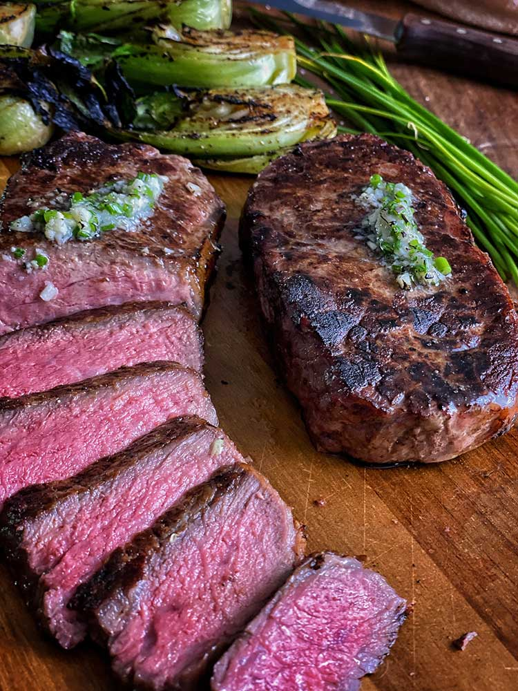

New York Strip Steak

Why Cook Steak?
Going to a steak house is great but it's also gonna cost you a pretty penny. I say we can do this full steak meal completely homemade, on a tight budget with results that are... dare I say better?
Ingredients
- 3 Tbsp high heat cooking oil (canola, vegetable, etc.)
- 2 thick steaks
- 1/4 cup (56g) butter
- 2-3 cloves garlic
- 1 bunch Rosemary
- Salt and pepper to taste
Instructions
- Pat the steak dry with paper towels. Season generously with salt and pepper on both sides.
- Add high heat oil to a 10 inch skillet. Heat over medium-high heat until just about to smoke.
- Season the steak generously with salt and pepper, add to the pan and sear for 2-3 minutes (or until a golden-brown crust is formed) on both sides.
- Add 3 tablespoons of butter, crushed garlic cloves, and any hearty herbs. Based repeatedly with the butter until a medium-rare or 135 degrees Fareinheight is reached.
- Once finished, pull the steak out, coat with a little butter, and let rest for 5-8 minutes.
- Slice the steak and serve.